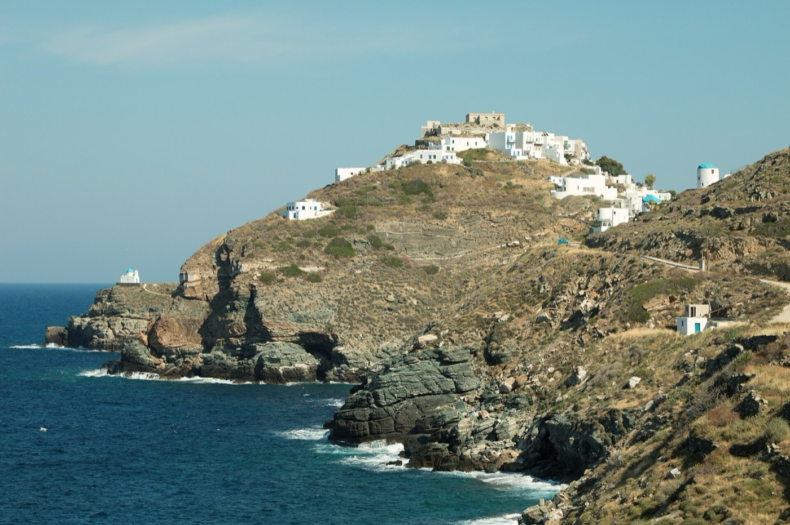
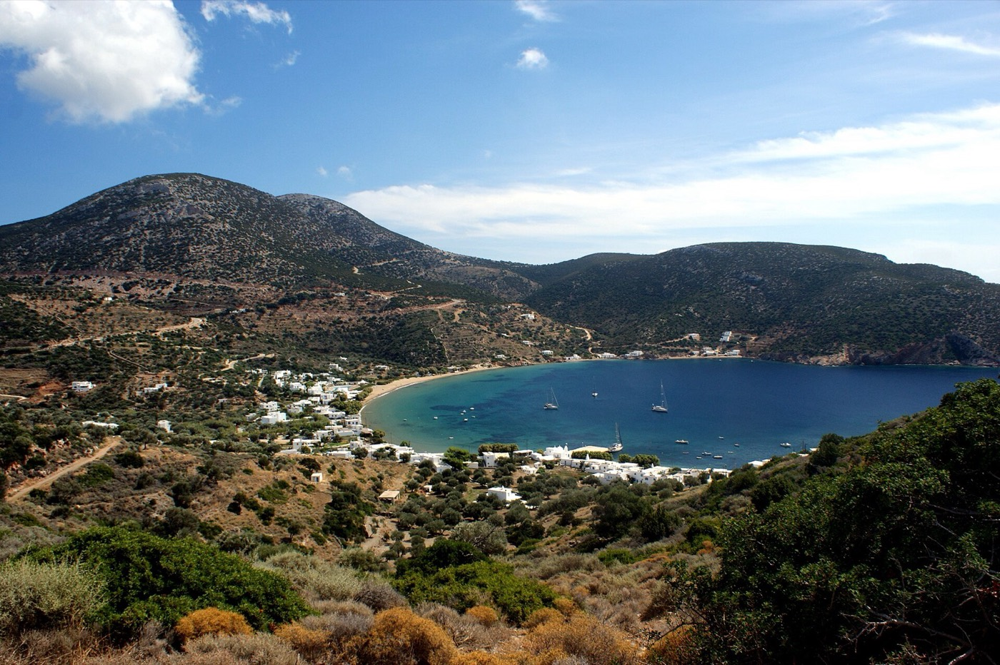
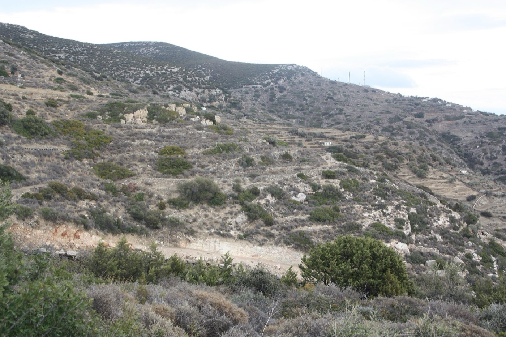
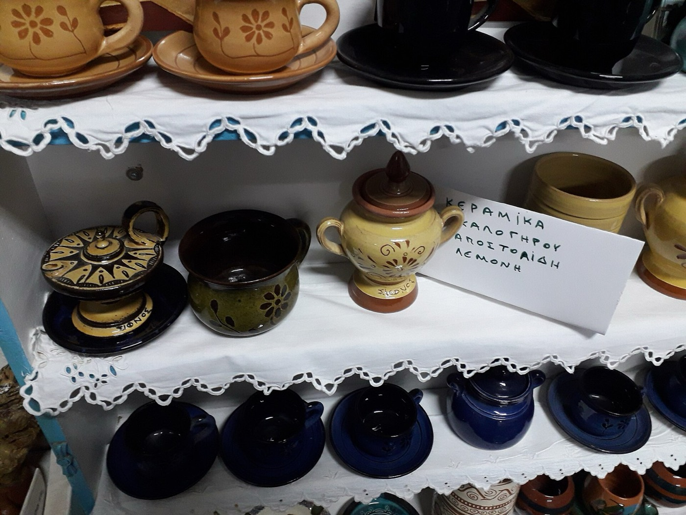
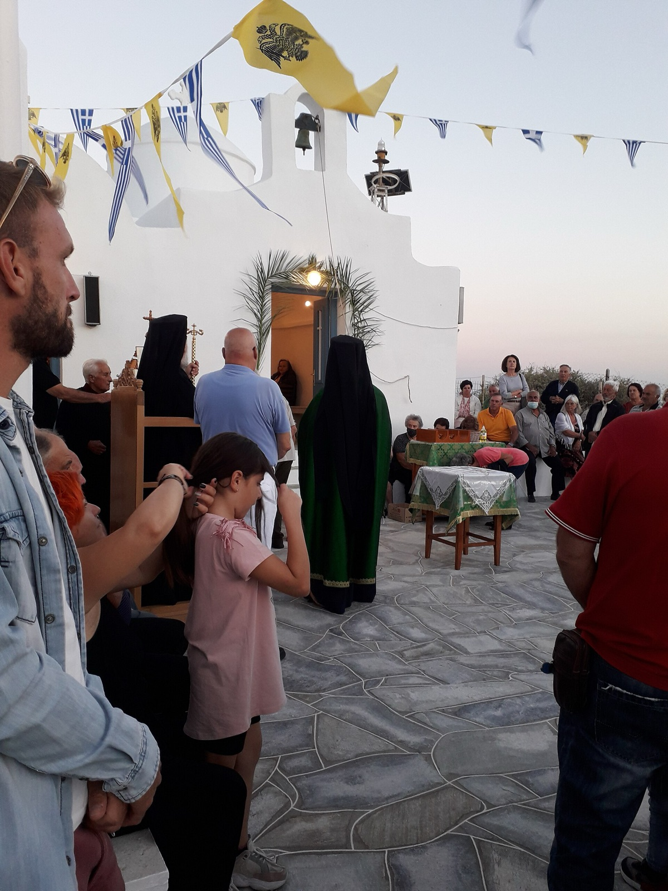

Σίφνος
Το νησί γύρω μας
Ένα μικρό νησί των δυτικών Κυκλάδων, με πλοίο από τον Πειραιά. Η Απολλωνία, ο Αρτεμώνας και το Κάστρο είναι χτισμένα στους λόφους· οι παραλίες, ανάμεσά τους και ο Πλατύς Γιαλός, απλώνονται στους κόλπους από κάτω. Η Σίφνος είναι γνωστή για τους αγγειοπλάστες και την κουζίνα της, και για τη μακρά ιστορία της στα μεταλλεία και στο χτίσιμο.
Οι σελίδες αυτές είναι οι σημειώσεις μας για τους επισκέπτες: παραλίες, περίπατοι και βάρκες, πού μας αρέσει να τρώμε, και η αρχαιολογία του νησιού. Δεν είναι πλήρης οδηγός, και τα πράγματα αλλάζουν από καλοκαίρι σε καλοκαίρι, γι’ αυτό ρωτήστε μας πριν πάτε.

Φωτογραφία: Zde, CC BY-SA 4.0, μέσω Wikimedia Commons

-

Αρχαιολογία
Ο προϊστορικός οικισμός στον λόφο μας, και η ακρόπολη, τα μεταλλεία και οι πύργοι του νησιού.
Φωτογραφία: Zde, CC BY-SA 4.0, μέσω Wikimedia Commons
-

Παραλίες
Αμμουδιές που πάτε με τα πόδια, ήσυχοι όρμοι λίγα λεπτά με το αυτοκίνητο, και οι κόλποι στα βόρεια.
Φωτογραφία: Kondephy, CC BY-SA 4.0, μέσω Wikimedia Commons
-

Στο ύπαιθρο
Σηματοδοτημένα μονοπάτια, ηλεκτρικά ποδήλατα, βάρκες και καταδύσεις και μετακινήσεις.
Φωτογραφία: Kkanak, CC BY-SA 4.0, μέσω Wikimedia Commons
-

Φαγητό
Ρεβιθάδα, μαστέλο και μανούρα, και οι ταβέρνες, οι φούρνοι και τα μπαρ που μας αρέσουν.
Φωτογραφία: Catlemur, CC BY-SA 4.0, μέσω Wikimedia Commons
-

Πολιτισμός
Κεραμική, βιολί και λαούτο, τα καλοκαιρινά πανηγύρια, τα μουσεία και τα μοναστήρια.
Φωτογραφία: Catlemur, CC BY-SA 4.0, μέσω Wikimedia Commons


Μετακινήσεις
- Πλοίο Από τον Πειραιά ως τις Καμάρες, το λιμάνι του νησιού, σε 2,5 έως 5 ώρες, ανάλογα με το πλοίο.
- Λεωφορείο Η δημοτική συγκοινωνία συνδέει τα χωριά με τις κυριότερες παραλίες· τα δρομολόγια αλλάζουν ανάλογα με την εποχή.
- Αυτοκίνητο ή μηχανάκι Γραφεία ενοικίασης στον Πλατύ Γιαλό, στις Καμάρες και στην Απολλωνία.
- Βάρκα Ενοικίαση σκαφών και ημερήσιες εκδρομές από το λιμανάκι του Πλατύ Γιαλού.
Καταλύματα φίλων
Αν τα διαμερίσματά μας είναι κλεισμένα, αυτά τα καταλύματα τα έχουν φίλοι μας.
-
Φάρος
Στούντιο στα βράχια πάνω από τον Φάρο, με θέα στη θάλασσα.